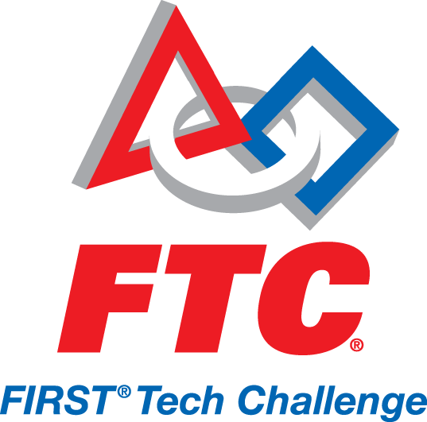

Team 100 participates in the FIRST Robotics Competition (FRC) annually. Kickoff is on the first or second Saturday of every January and is when the new challenge is released. Each year the challenge is different, and over the years, as new technology expands robot capabilities, the games get harder. Sometimes games are based on sports, but there's always a special twist.
The FRC competition experience continues to be one of the most fun and exciting events of students' high school careers. The intensity of matches grows as students feel the connection to their robot, as though it is their masterpiece - because it truly is. Students in the stands are constantly in and out of their seats cheering for their robot and dancing with other teams.
FRC is only one of the four FIRST leagues. FRC is often known as a "big brother" to all the other leagues, including FIRST Tech Challenge (FTC), FIRST LEGO League (FLL), and Junior FIRST LEGO League (Jr.FLL).

When you think of robotics and Woodside, your mind immediately jumps to Team 100. But did you know that there is another team at Woodside? Team 4800 (the Robocats), a 2nd year FTC team, has been using Team 100’s resources, knowledge, and team members as a source for help. Consisting of only four members, three of which are on Team 100, the Robocats need all the help they can get.
This year’s game, “Ring it Up,” requires a robot no larger than 18x18x18 to collect rings and place them on pegs of varying heights. Compared to building a 5-foot robot that can shoot Frisbees and climb a 7-foot pyramid, this seems easy, right? Wrong.
Being on an FTC team requires an extensive amount of knowledge and experience, which is something that first-year members (3 of the 4 members) don’t have. That’s where Team 100 comes in. Veteran team-members as well as mentors and parents all aid Team 4800 in their quest for success. At the beginning of the FTC season, team alumni talk to the new members and help them get to know the game & rules. Mr. Shannon, the “Robocoach,” if you will, aids the Robocats in designing robots in SolidWorks and answers general mechanical questions. Parents play a crucial role in the perspective victories of both Woodside-based robotics teams.
Team 100 members also support local FTC teams by attending and volunteering at their competitions. One of Team 100's schools, Sequoia High School, hosts FTC qualifier competitions yearly. Team 100 students are eager and willing to contribute to these events by volunteering as scorekeepers, field resetters, and judges. Whether cutting aluminum in the shop, programming a manipulator, or helping out at the competitions, both teams have each others’ backs.
In the past, Team 100 has performed volunteer work for FIRST’s LEGO League, otherwise known as FLL. Children from 9 to 14-years-old build autonomous robots using LEGO® MINDSTORMS®. They then enter FLL competitions in order to win points on a playing field and solve an annual Challenge. Challenges are based on Projects, which teach kids about science and technology. Teams are made of up to 10 members with an adult coach and my choose to participate in an official tournament.
To learn more, go to their official website
Challenges
Team 100 has participated in the FIRST Robotics Competition since 1997. Each year, a new challenge, or game, is released to the teams. For a history of each FRC challenge, please read this document.